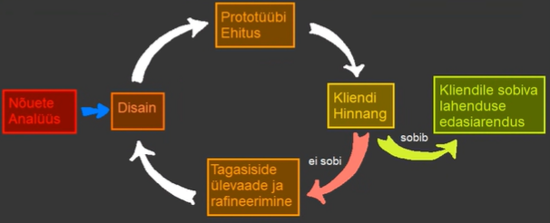

Prototüüp on algne versioon mida kasutatakse katsetamiseks ning demonstreerimiseks.

| Head küljed | Halvad küljed |
|---|---|
| Saab katsetada ideed et teada kas töötab või mitte. | |
| Täpsem ühildumine kasutaja tegelike vajadustega. | |
| Parem kavliteet ja hooldatavus. | |